玉名金属株式会社
鉄を守る溶融亜鉛めっき。
JIS認証工場の確かな技術が、
社会の様々な分野でお役に立っています。
製品紹介
PRODUCT INTRODUCTION
高度な技術と信頼を基盤として、鉄のさまざまな可能性に挑戦します。
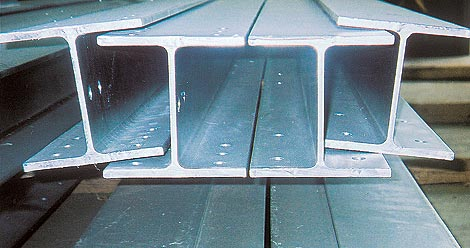
めっき製品
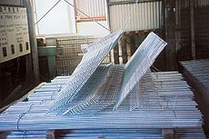
めっき製品

めっき製品
作業工程
WORKING LINE
安全性と効率性に配慮しためっき作業工程。
品質管理にも細心の注意が払われています。
品質管理にも細心の注意が払われています。
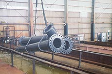
前処理工程
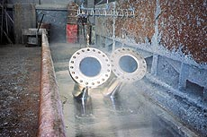めっき行程
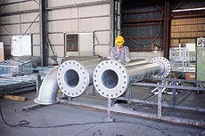仕上検査工程
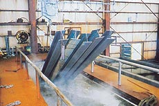
前処理工程
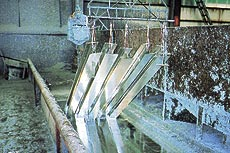めっき行程
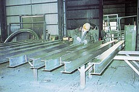仕上検査工程
めっきの作業方法
- 脱脂
- 苛性ソーダ水溶液で油脂類を除きます。
- 酸洗
- 塩酸亜鉛アンモニウム水溶液で清浄しさびを除きます。
- めっき
- 445℃前後の溶解亜鉛槽に浸漬しめっきします。
- 冷却
- 水槽に浸漬し合金反応を止めます。
- 検別
- 計量および中間検査を行い合格しないものは再めっきへ廻します。
- 仕上げ
- 余剰の付着亜鉛や酸化物を除去します。
- 検査
- 外観検査およびめっき試験を行い完成品となります。
めっきの特徴
ABOUT PLANTING
溶融亜鉛めっきの特徴と効果
産業界に広く使われている鉄を「錆」から守るためにいろんな防食法が研究されております。
その中で溶融亜鉛めっきの優れた防食性が認められ、あらゆる分野で適用されております。
その中で溶融亜鉛めっきの優れた防食性が認められ、あらゆる分野で適用されております。
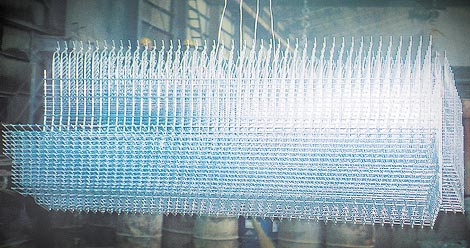
めっきの特徴
- 耐食性
- 溶融亜鉛と鉄との反応により合金層と亜鉛層を形成しためっき皮膜により長期間の防錆効果を発揮します。
- 経済性
- 溶融亜鉛めっきは防錆法と比較して抜群に経済的です。例えば塗装の場合数年毎に塗り替えが必要となりますが、溶融亜鉛めっきでは当初の単価は幾分高くつきますが、数十年全く補修の必要もなく最も安い防錆法といえます。
- 密着性
- 445℃前後に溶解した亜鉛と鉄との合金反応により密着した亜鉛皮膜は衝撃に強く、剥離することはほとんどありません。
- 均一性
- 鋼構造物の内面にまで均一にめっきする事ができ、目に見えない部分の防錆も安心です。
お問合せ
INQUIRY
お問い合わせは、お電話・FAXにて受け付けております。
お気軽にお問い合わせください。
お気軽にお問い合わせください。
お電話でのお問い合わせ
TEL : 0968-78-6221
受付時間 9:00 〜 17:00
FAXでのお問い合わせ
FAX : 0968-78-3233
随時お受けいたします
会社概要
COMPANY OVERVIEW
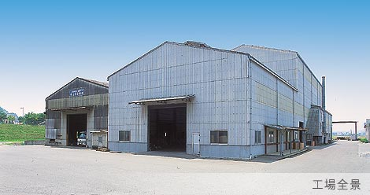
会社概要
- 代表取締役 社長
- 千蔵 和宜
- 所在地
-
〒865-0012
熊本県玉名市山部田213番地
- 電話番号
-
TEL 0968-73-4046
FAX 0968-73-2521
- 資本金
- 3,000万円
- 従業員
- 30名
- 営業種目
- 溶融亜鉛めっき加工
- JIS認証番号
- JQ0808026
- JIS認証規格
- JISH8641 2種
- 主要設備
-
・亜鉛めっきバス有効寸法
長さ12m×巾1.4ｍ×深さ1.8ｍ
沿革
- 昭和55年7月
-
資本金500万円
小物めっき開始（めっきバス２Ｍ）
- 昭和56年9月
- めっきバス取替（４Ｍ）
- 昭和61年10月
-
設備拡張 資本金1,500万円に増資
（めっきバス７Ｍ）
- 平成元年2月
- 日本工業規格表示許可取得
- 平成8年10月
- 設備拡張（めっきバス12.5Ｍ）
- 平成9年3月
- 資本金3,000万円に増資
- 平成20年11月
- JIS認証取得
MAP
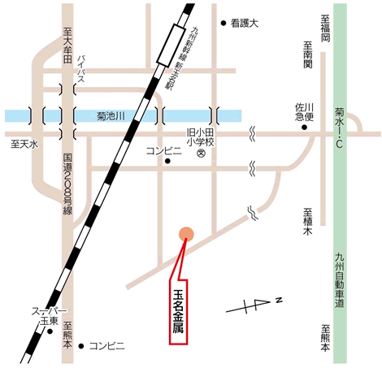
〒865-0012
熊本県玉名市山部田213番地
玉名金属株式会社
熊本県玉名市山部田213番地
玉名金属株式会社